Both islands of New Zealand in eleven days. The glow-worm caves of Waitomo and two nights in Rotorua for geysers, kiwi and a Māori cultural evening, then a flight to Christchurch and a self-drive loop of the South Island: over the Southern Alps to the Franz Josef and Fox glaciers, down the Haast Pass to Queenstown for Doubtful Sound and a free adventure day, and back via Aoraki Mt Cook and Lake Tekapo. Three days have 5 to 6 hours of driving, and the Doubtful Sound day from Queenstown is about 12 hours; a scenic flight-cruise is a shorter option. We removed the original plan's second car pick-up in Queenstown: you keep the car from Christchurch throughout.
See it for yourself
Photos from the journey
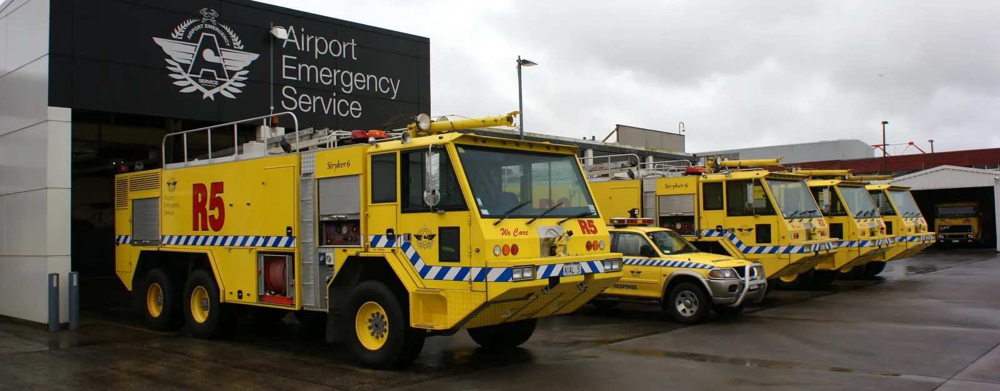
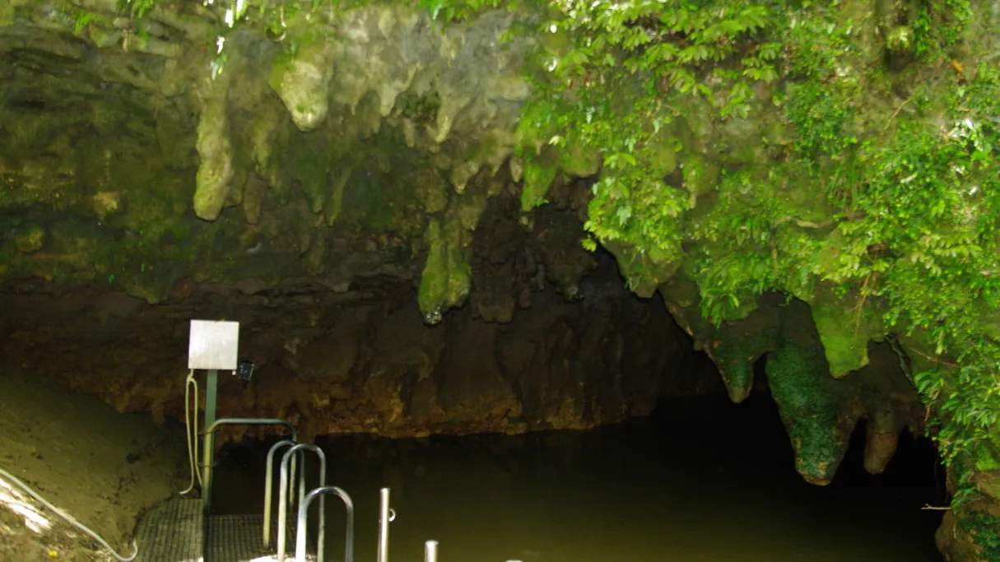
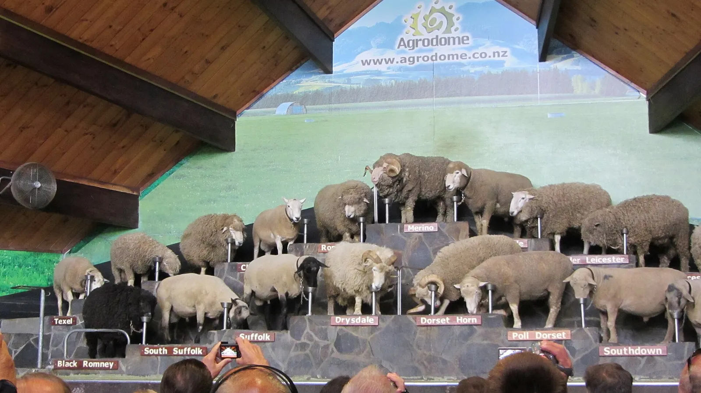
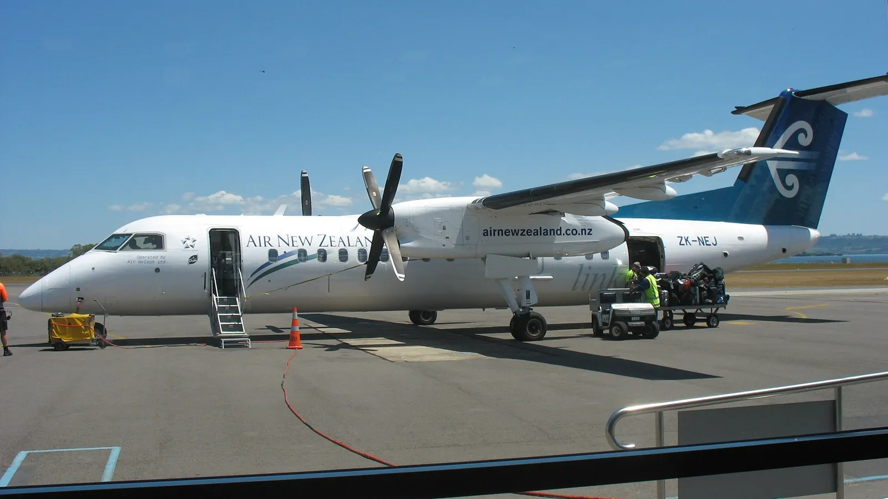
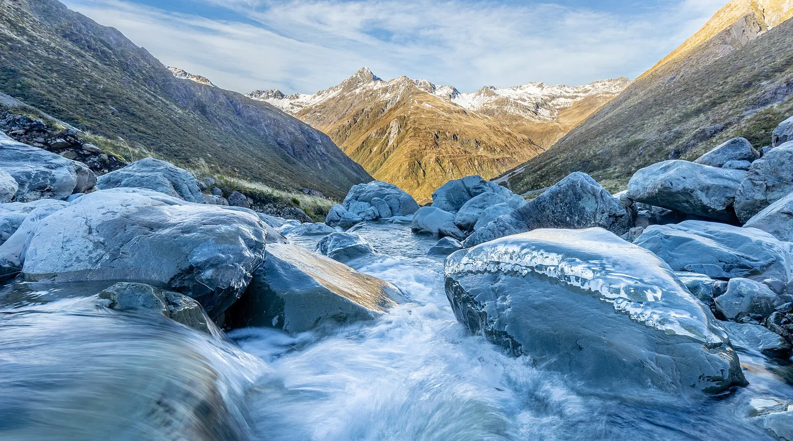
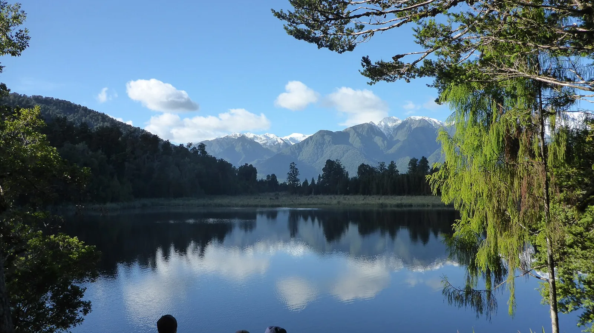
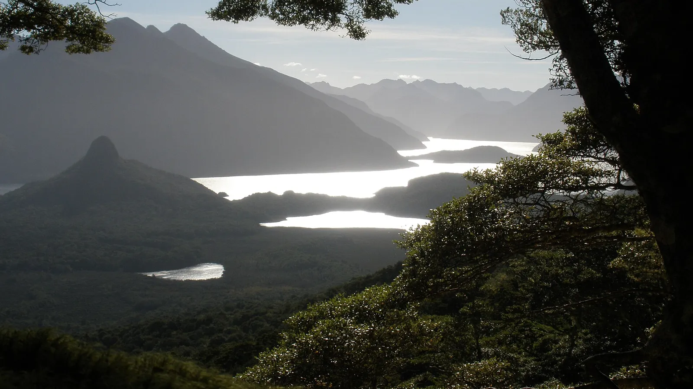
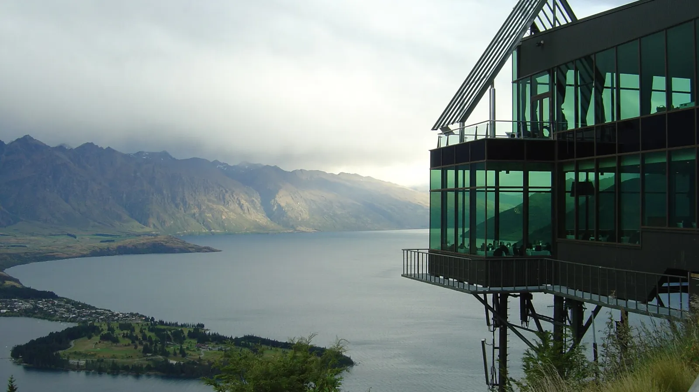
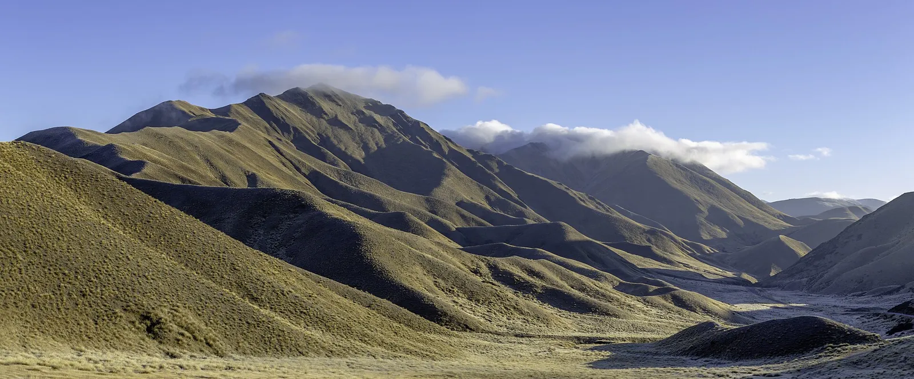
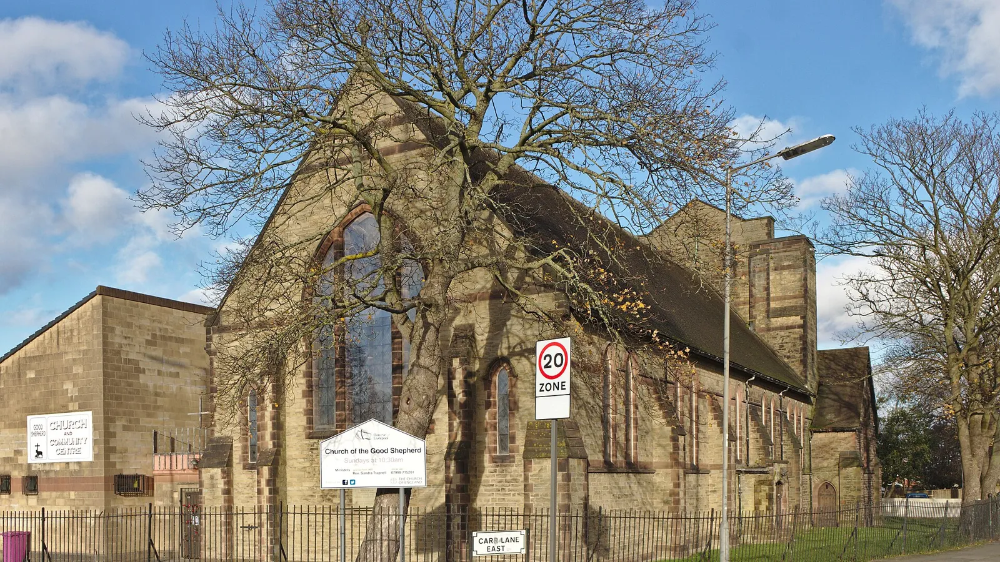
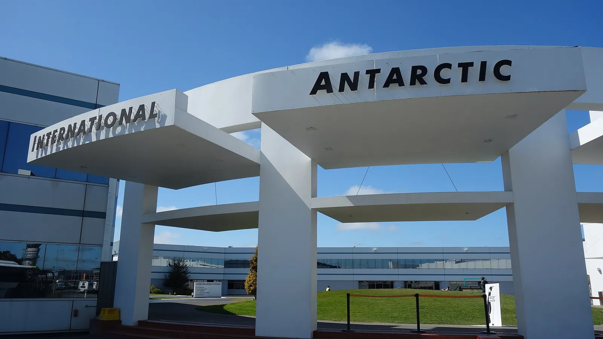
Where you go
The journey on one map
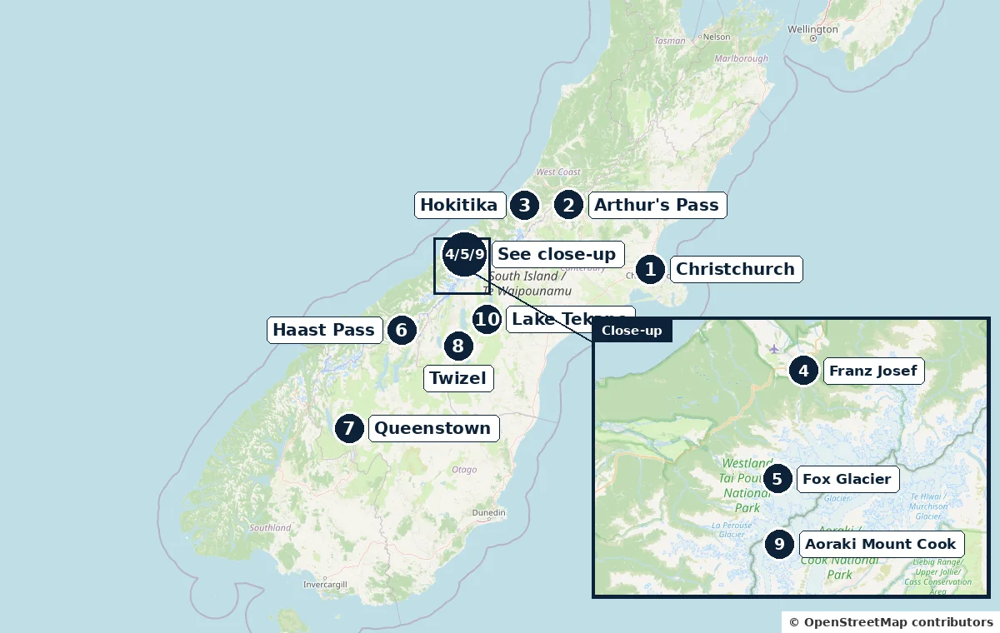
AucklandWaitomoRotoruaChristchurchArthur's PassHokitikaFranz JosefFox GlacierHaast PassWanakaQueenstownDoubtful SoundTwizelAoraki Mount CookLake TekapoChristchurch
Day by day, in short
Daily travel brief
Distances are by road for the whole day. The full plan with timings comes with your detailed itinerary.
-
1
-
2
Waitomo glow-worm caves to Rotorua
- Waitomo or Ruakuri caves: tours run every 30 minutes; book a slot for your arrival time.
- Rotorua smells of sulphur; you get used to it within an hour.
-
3
Rotorua: geysers, kiwi and Māori culture
- Te Puia: stay on paths; the ground around the geysers is unstable.
- Māori cultural evening and hāngī: the welcome is a sacred ceremony.
-
4
-
5
-
6
Glacier heli-hike or Lake Matheson, then the Haast Pass to Queenstown
Fox Glacier Haast Pass Lake Wanaka
- Glacier heli-hike: weather cancels flights often; book for the morning.
- Sandflies on the West Coast bite; use repellent at every stop.
-
7
-
8
Queenstown your way
- Use only licensed operators and follow the weight and health limits.
- Queenstown has several Indian restaurants.
-
9
Central Otago to Aoraki Mt Cook
- Hooker Valley track: good shoes and wind jacket.
- Aoraki Mackenzie is an International Dark Sky Reserve: look up after dark.
-
10
Lake Tekapo to Christchurch
- Church of the Good Shepherd, Lake Tekapo: it is a working church; no photos inside, and stay quiet.
- Lupins flower around Tekapo from mid-November to December.
-
11
International Antarctic Centre and fly home
- Return the car and check in: be at the airport 3 hours before an international flight.
- Refuel the car before returning it.
Local know-how
Travel hacks from our desk
Hotel deposit
Use a credit card for the deposit or pre-authorisation at check-in, never a forex or debit card. Forex cards cannot hold funds, many hotels refuse them, and a credit-card hold is released faster.
Cards and cash
On card machines, always choose to pay in New Zealand dollars, never in INR. Cards and contactless work almost everywhere.
Driving on the left
New Zealand drives on the left. Your Indian licence is accepted if it is in English; otherwise carry an approved translation or International Driving Permit. Roads are winding and one-lane bridges are common: slow down and give way as signed.
Four seasons in a day
Pack layers, a rain jacket and sunscreen. The UV index in New Zealand is very high even on cool days.
When to go
Best time to visit for this journey
February to April.
October to April. December to February is summer and busiest; March and April have settled weather and autumn colour. Winter brings snow to the passes.
The package
What's included
Included
- 10 nights with breakfast
- Private transfers and driver on the North Island
- Flight Rotorua to Christchurch
- Rental car Christchurch to Christchurch with insurance
- Waitomo caves, Te Puia, Agrodome, Rainbow Springs and Māori evening with hāngī
- Doubtful Sound day tour
- 24/7 support from Blue Diamond Voyage
Not included
- International flights
- New Zealand visa
- Fuel and parking
- Adventure activities
- Other meals
- Travel insurance
The detailed itinerary
Some journeys are planned. Ours are crafted.
The full 11-day plan is ready: hour-by-hour timings, drive times, temple dress codes, food for your diet and a route map for every day. Tell us your dates and your city, and we'll send it to you on WhatsApp, shaped around you.
- Hour-by-hour timings
- A route map for every day
- Hotel and room details
- Visa and entry steps
- Vegetarian and Jain dining
24/7 travel desk+91 97148 59797+91 98242 21400
Photo and map credits
- Auckland Airport: 111 Emergency from New Zealand, CC BY 2.0, via Wikimedia Commons
- Waitomo Glowworm Caves: Bgabel, CC BY-SA 3.0, via Wikimedia Commons
- Agrodome: Robert Linsdell, CC BY 2.0, via Wikimedia Commons
- Rotorua Airport: Air55, CC BY-SA 3.0, via Wikimedia Commons
- Arthur's Pass: Michal Klajban, CC BY-SA 4.0, via Wikimedia Commons
- Lake Matheson: Thomas Booker (CoderThomasB), CC BY-SA 4.0, via Wikimedia Commons
- Lake Manapouri: Kasper moreaux, CC BY-SA 3.0, via Wikimedia Commons
- Skyline Queenstown: BigBackpack, CC BY-SA 3.0, via Wikimedia Commons
- Lindis Pass: Michal Klajban, CC BY-SA 4.0, via Wikimedia Commons
- Church of the Good Shepherd: Rodhullandemu, CC BY-SA 4.0, via Wikimedia Commons
- International Antarctic Centre: Daderot, CC0, via Wikimedia Commons
- Maps: © OpenStreetMap contributors; road routes by OSRM.